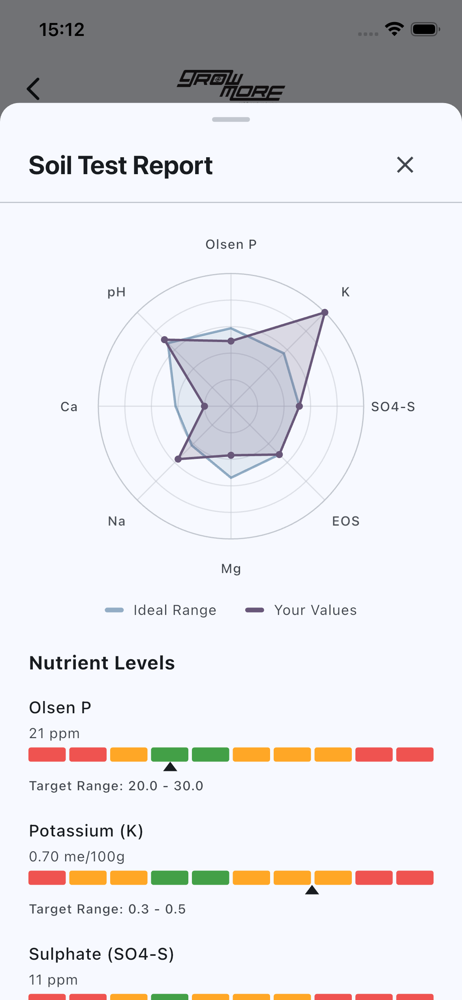
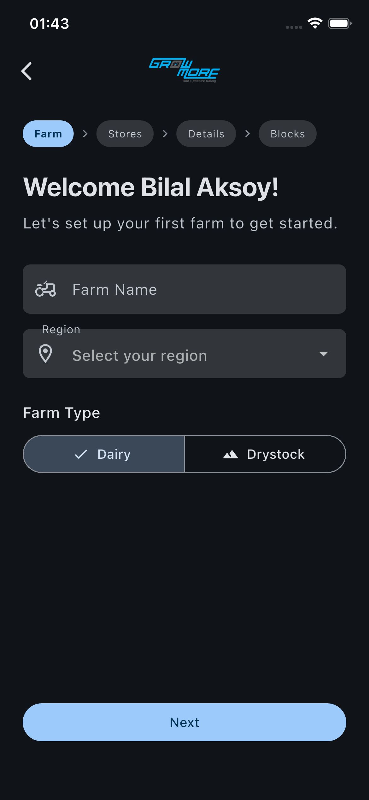
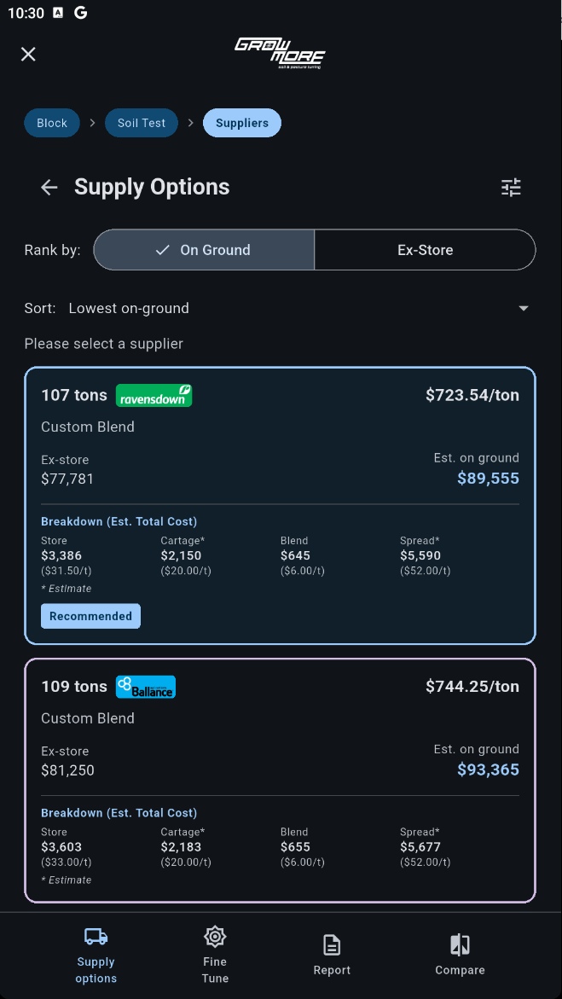

Enter your soil test results and get a science-based nutrient plan — with real pricing from every major NZ supplier ranked by on-ground cost. More productive pastures start with better information.

Top farms consistently achieve 1,100–1,700 kg MS/ha. The gap between average and top performers often comes down to one thing: how well fertiliser decisions align with what the soil actually needs. GrowMore puts that calculation in every farmer's hands — free, transparent, and grounded in science.
From soil test to fertiliser plan in three steps.

Enter your farm name, region, and type — Dairy or Drystock. Add your blocks with their size and soil type. Takes two minutes the first time, saved forever after.
Input your results from Eurofins, Hill Labs, or PAL. The app maps every nutrient against target range and generates a written summary of what your soil needs this season.

Custom blend options from Ballance, Ravensdown, Dickie Direct, Marnco and more — ranked by on-ground cost. The best value option is highlighted. Order through the app or take the plan to your supplier.
GrowMore earns a commission from participating suppliers when orders are placed through the app — at the same flat rate from every one of them. That equal treatment is what keeps recommendations honest: we have no financial reason to favour any supplier over another.
Suppliers who aren't yet on the platform still appear in pricing results — you'll just need to place those orders manually. Over time, as more suppliers join, the whole market becomes more transparent and more competitive for everyone.
The recommendation you receive is driven entirely by what your soil test says your pasture needs, and which available product combination delivers that at the lowest on-ground cost.
Every participating supplier pays the same rate. No premium placements, no preferred partners.
Nutrient requirements are calculated from your soil test and farm parameters — not from what's in stock or on promotion.
Ex-store price, cartage, blending and spreading shown separately. You see exactly what you're paying for.
Manage all your blocks in one place. Different soil types, hectares, and soil tests handled separately — or combined with weighted averages for large blocks.
Calculates what your soil needs — N, P, K, S, Mg, Ca and trace elements — based on your actual test results, soil type, farm type, stocking rate and rainfall.
Adjust nitrogen rates, capital vs maintenance split, regenerative vs conventional inputs, and inhibitor preferences. Blends re-calculate instantly.
Generate a complete fertiliser plan — product list, rates, total cost — ready to send to your contractor or hand to your supplier.
Toggle between conventional, regenerative, or certified organic product preferences. Compare what each approach costs for your specific situation.
Built for the paddock. Works offline once your farm is set up. Available free on the App Store and Google Play.
After running the numbers, GrowMore generates a written summary of what your soil test means — which nutrients are deficient, which are at risk, and what that implies for your fertiliser programme this season.
No black box. No "trust us". A transparent calculation you can interrogate, compare across suppliers, and share with whoever needs to see it.

GrowMore is free to download. Available now on iPhone and Android.